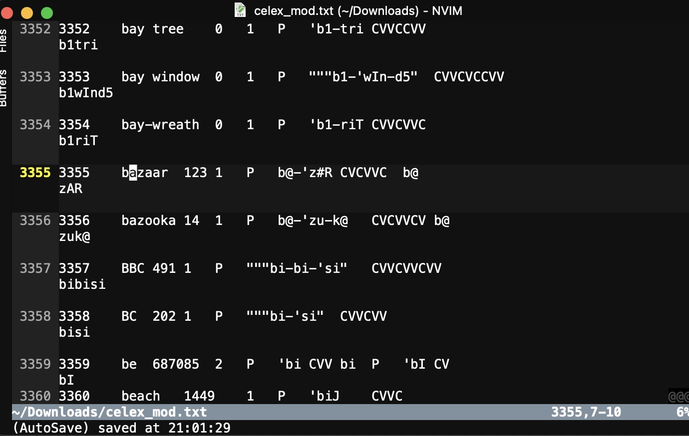
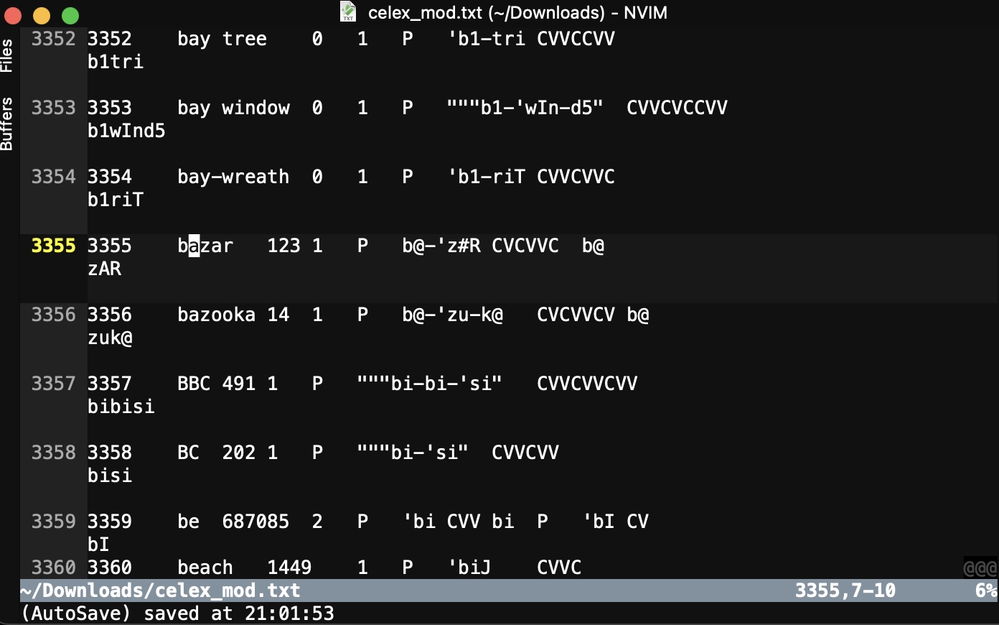

# Data Pipelines and Data Storage ### Will Styler - CSS Bootcamp --- ### Today's Plan - Finding and Collecting Data - Data formatting - Organizing Data Storage - How to design a data pipeline - Handling Sensitive data and Encryption - Data Compression - Validating Data and Hashing --- ### Let's think today about how to be good data shepherds - Throughout the lifetime of your data --- ## Finding Data --- ### Some data are found - **What are examples of found data?** - Downloaded datasets from online - Other folks' data given freely - Pre-aggregated statistics and data - Existing Databases - Existing corpora --- ### Concerns for collecting existing data - Keep records of date-of-acquisition and source/url - Preserve or note original filenames - If you take a subset or remove unnecessary data, keep the script(s) which did so - Changes to data could be an **actual legal liability** for you, so be careful - Think *forensically*, and maintain a chain of custody - You might want to use hashing, which we'll discuss later --- ## Collecting Data --- ### Collecting your own data - What are forms of data collection you might do? --- ### Concerns for collecting new data - Are you naming your files reasonably? - Are you collecting the data in easy-to-ingest formats? - Are you anticipating the cleaning and processing you'll have to do? - What metadata do you need? - How are you backing your data up? - Where does the data live, and how is it organized? --- ### Regardless, you'll need to think about format... --- ## Data Formatting --- ### What are *bad* data formatting choices? --- ### What are *good* data formatting choices? --- ### Good data formatting ideas - Use 'tidy' formats which are easy to analyze and visualize - Use lowercase column, identifier, and category names without whitespaces or special characters - The closer to base [ASCII](https://en.wikipedia.org/wiki/ASCII) you are, the better - Avoid punctuation and whitespace - No initial numbers - Code logical variables with numeric 0 and 1 - ISO Date/Time (2022-09-05T09:25:22.317640-07:00) --- ### Store your data in robust, interoperable formats - .wav for audio, mp4 for video (with care paid to codecs) - csv or tab-delineated (tsv) for tabular - .txt or .md or .tex for text, using UTF-16 where you can - Image formats are mostly good-to-go, but jpg, tiff, and png are great - Avoid proprietary formats which require specific software to open - "What happens if every software company I use shut down tomorrow and turned off their servers?" --- ### Store your data in clear folder structures - There should be one place where a given file should be - Like files in like folders - Use version control to manage changes, not folder copies - It's very easy to combine a folder full of csv files into a single larger dataframe with a for loop - **Why would this be useful?** - Keep things in one place for easy backup --- ### Filenames are useful for storing information - Use meaningful filenames which you can `filename.split("_")` later - `exp1_control_p26_bend_airflow.wav` - project_condition_participant_word_rectype - Consistent naming schemes make life easier --- ### Time spent organizing data is not wasted - "I know we didn't collect a participant 87, as it would have been in this folder" - You're helping future researchers to reproduce your analysis - You're helping your future self too! - Organized data is easier to put into... --- ## Data Pipelines --- ### You're unlikely to use just one tool to look at your data - Sometimes, you'll need to create additional metadata - Sometimes, you'll need additional analyses to feed into your final goal - Sometimes, you'll need to pre- or post-process the data - Sometimes, your analysis will have many steps involved --- ### Sample Pipeline Tasks - Data annotation - Data post-processing - Derived Data Creation - Data format conversion - Dimensionality Reduction and Clustering - Server-side computes --- ### In Python, you're more likely to stay within python - World-class ML and Stats are available in one place - Libraries exist for working with audio, text, and images - NLP tools are absolutely available - Python is server-side run friendly - This is part of the reason we're teaching you python --- ### This means it's possible to have 'one script to rule them all' in a Jupyter Notebook - Goes from 'raw' to 'ready for publication' (in enough time) - Hooray for stateless analysis! --- ### Sometimes that's not practical - Different tools which don't play nice with others (e.g. ArcGIS, MATLAB) - Different toolkits with one specific analysis you need - Compute times that are too large to run everything repeatedly - Loads split across different machines - Multi-person workflows --- ### Multi-Person Workflows - Having multiple humans working on the same data - What can this look like? - Why would you do this? --- ### What are good practices for data pipelines? --- ### What are the dangers of doing this badly? --- ### Some good pipelining ideas - Document the process well - "First, data goes into MATLAB, turning the raw position data into a matrix of X, Y, Z, pitch, roll, yaw by time coordinates..." - Every project should come with a lab manual - Use scripts rather than GUI-based processing, and keep all the scripts used together in one place - Use lots of 'if this file exists, skip this step' commands to make sure you can delete everything but the raw data - Put expensive steps early in the pipeline if you can so they get re-run less often --- ### Good Pipeline Ideas, Continued - Use the same, interoperable formats between steps - Clearly store intermediate or derived forms of data - Folders or filenames for 'raw', 'matlab_processed', 'processed_annotated', 'analysis_ready' - Write every step to be run as a batch, across all the data - Makes it easy to add a participant and re-run - Consider making a mega-script to run the sub-steps all in order, if that makes sense --- ### When you screw this up... - "Wait, did I actually do all the processing for this particular person's data?" - "Oh no, I don't remember which scripts we ran in which order!" - "We forgot a participant, but re-processing all the data would take a week" - "Uh, sorry, I just realized I exported all the position data from MATLAB without doing the correction step, can you re-run with these files?" - "Hey, can we fly you back out here to train your replacement's replacement? The last guy left a mess, and we don't know how he was processing the data." --- ### In summary - Make your entire analysis reproduce from code with one click - If you can't do that, make it reproduce from a small number of well-documented clicks - If you can't do that, document the heck out of every single click required so that it's easy to re-do later - Doing otherwise hurts Will where he's quite sensitive --- ## Special Concerns for Sensitive Data --- ### Sensitive data types - What kinds of data are freely shareable? - What kinds of data are sensitive *temporarily*? - What kinds of data are *always* sensitive? --- ### "How little data can I save?" - "Do I have to video record sessions?" - "Can we blur participant faces in saved interview recordings?" - "Should I save the audio, or just transcripts?" - "We don't really need to keep phone numbers or birthdates, right? - "Do I need a document linking names to participant IDs?" --- ### Data Deidentification - Store identifiers rather than names - 'Bin' the data such that 'birthday' becomes '30-35' and 'La Jolla' becomes 'Southern California' - Remove or replace other potentially identifying data. - "Add a random date offset between 2 and 300 days for each patient's records" - "Exchange every instance of location names with another location name" - Ask for proxy data - "Give me documents which look like intelligence reports, but aren't intelligence reports" --- ### "Deidentified" doesn't always mean "freely shareable" - "On $DATE, we visited $CITY. The Eiffel tower was so beautiful lit up for Christmas." - "During the interview, 324ef2a described why he hates when people call him "Wliliam", and prefers 45ce78f instead." - "Mr. 238d4f indicated that as the Pastor of a Seventh Day Adventist church near his hometown of Ann Arbor, he must keep his homosexuality secret." - "In these anonymous location data, find all people who spend 8 hours daily near PEB 425 on weekdays starting on July 25th but not on Sep 5th, who go to Vons in UTC regularly, and who remained on campus until 5:30 on Monday Sep. 12th. Show me all addresses in which they overnight." - [De-Identified Data can be re-identified](https://www.theregister.com/2021/09/16/anonymising_data_feature/), so think like an attacker would --- ### Types of Sensitive Data - **Personally Sensitive Data** can cause financial, social, or physical harm to individual people if in the wrong hands - **Organizationally Sensitive Data** can cause financial, reputational, or practical harm to a company, group or institution if in the wrong hands - Some data can be both! --- ### Personally Sensitive Data - Medical records ([HIPAA](https://en.wikipedia.org/wiki/Health_Insurance_Portability_and_Accountability_Act)) - Educational Recrods ([FERPA](https://en.wikipedia.org/wiki/Family_Educational_Rights_and_Privacy_Act)) - Qualitative data with identifying and socially meaningful information (e.g. interviews) - Sensitive financial, locational, and identity information (ID theft, doxxing, (cyber)stalking) - Data which can link people to activities they'd rather keep anonymous (e.g. screen names linked to phone numbers, cryptocurrency wallet purchase records) - What else? --- ### Organizationally Sensitive Data - Data describing audits or investigations in progress - Data which would be valuable to a competing entity (e.g. sales data, R&D budget, upcoming product performance) - Data which provides insider information (e.g. upcoming sales figures, information about a recall) - Code or data which constitute 'trade secrets' or 'secret sauce' --- ### Organizationally Sensitive Data, Continued - Data protected by privacy policies or data-use agreements - Data with constraints placed by an institutional review board - Classified Governmental Data - What else? --- ### Data which are both personally and organizationally sensitive - Identities of spies or domestic violence survivors in an organization's network - User data of apps targeted at LGBTQ+ individuals - Library records - User collected phone data --- ### Organizationally sensitive data can become less sensitive - Companies/Organizations/Governments break down - Time gated data (e.g. earnings or audit reports) - Programs can be declassified - Proprietary technology can leak or become irrelevant - ... but personal data is more or less permanently sensitive --- ### Working with Sensitive Data - Centralize the data, and work on the remote server via SSH/VNC over VPN - Designate specific folders for sensitive data, and remove them from local backups - Create code and annotations in a format that doesn't include any of the raw data - References to columns and anonymous identifiers, rather than names - References to character offsets rather than text (e.g. 'characters 30-45 in MED_DOC_1342 are a medication') - What else? --- ### Use general best practices - Use long, high-entropy passphrases and a password manager - "correct horse Battery staple css 22" is better than "aslfkjh32r4" - Encrypt the data on your computer and use a locking code on your phone - Use a VPN if you're connecting via sketchy wifi/ethernet - Keep your computer up to date - Don't save anything sensitive 'to the cloud' - If you must transfer files online, only transfer encrypted files --- ## Encryption --- ### Encryption Algorithms (Oversimplified) - 'Trap door' functions are hard *only in one direction* - *Prime Factorization* is a good example - 'This number is the product of two very large prime numbers, what are they?' - *Extremely* expensive to calculate prime factors - *Extremely* easy to confirm that you've got the correct answer - Your passphrase is used to generate a key which is a large number in a trapdoor function - The bits of the file are shuffled around such that they can only be un-shuffled in the right order with that number in hand using an algorithm like AES --- ### The numbers used are very large - AES-256 uses 256 bit numbers to do this math - 115,​792,​089,​237,​316,​195,​423,​570,​985,​008,​687,​907,​853,​269,​984,​665,​640,​564,​039,​457,​584,​007,​913,​129,​639,​935 is the largest 256 bit number - You would need to try a *lot* of numbers (2^255 keys) to get the answer - If every computer on Earth worked together to crack an AES 256 key, it would take approximately 13,668,946,​519,203,305,​597,215,004,​987,461,470,​161,805,533,​714,878,481 years [(Source)](https://scrambox.com/article/brute-force-aes/) - Not perfectly secure, but damned close --- ### Encryption Programs - Use your OS's built-in encryption as a base layer (e.g. Bitlocker, Filevault, Luks) - This protects against laptop thieves - Use `gocryptfs` for anything which shouldn't be unlocked when your computer is - ... or which shouldn't be backed up unencrypted - Tools like Restic or Borg with rclone allow for 'zero knowledge' backups - **Encryption can cause irrevocable data loss if you forget your key** - Powerful tools can hurt you --- ### Encryption is awkward across borders --- ### Rubber Hose Cryptanalysis <img class="r-stretch" src="img/rubber_hose.png"> --- ### ... but what if the data aren't that interesting, but just need to be stored? --- ## Long Term Data Storage --- ### Sometimes, projects actually end - You move on - The folders just never get opened again (😠) - (until they do) - What do you do with all the data? --- ### How do you archive and store data? - Option 1: Just leave it on your hard drive - Option 2: Compress it on your hard drive - Option 3: Store it elsewhere --- ### "Just Leave it" Pros and Cons - Easy to get at the data later if you need them - Data becomes searchable on your computer - Data takes up lots of space on your machine - Easy to accidentally modify the data - Version control! - Data is searchable on your computer (even when you don't want to) --- ### File Compression - "How can I more cleverly store these files while retaining all the information, even if it takes some computing time to decompress later?" - Dictionary-based coding - Good algorithms are `gzip` (.gz) and `zstd` (.zst) - **This is lossless compression, so don't worry about it** --- ### File Archiving - This turns a folder into a single file, for later use - "Store the files and their structure in a monolithic file" - `tar` is the best implementation of this - Archiving isn't necessarily compression - Although some things like `zip` do both! - Also valuable for encrypting files --- ### How to do file compression - Install `zstd` and `tar` - `zstd myfile.txt` and `zstd -d myfile.txt` - `tar --zstd -cf directory.tar.zst directory/` - `tar --zstd -xf directory.tar.zst` to decompress --- ### This turns your folder into `folder.tar.zst` - It's just one file you have to worry about - You can extract everything again later - ... and it takes up much less space - How much less depends on the contents --- ### "Compress it" Pros and Cons - Easier file management, transfer, and storage - Much less space required - You don't need to worry about accidentally changing or deleting files - If that one file gets deleted or corrupted, you have a problem - Harder to search through the archive or 'just grab something' --- ### Either way, back it up! - Or consider uploading it to a university or public data repository! - ... but how do you know if your 12GB tar.zst was corrupted during upload? --- ## Hashing Algorithms --- ### Hashing Algorithms solve problems - How can you be sure that two archives called `mydata.tar.zst` are really the same thing, or that your file isn't corrupt? - How can you give a set of changes in a git repository a guaranteed-to-be-unique name? - How can you make sure that a document which has been digitally 'signed' hasn't been modified since the signature? - How can I confirm that the password somebody entered is the same one they set up *without storing the password*? --- ### Cryptographic Hashing Algorithms - Take an input data array of arbitrary length and turn it into a unique output of a fixed length () - The same data will always produce the same hash - Data which is different, even only by a bit, produces an uncorrelated hash - It is a *one-way* function, and you can't regenerate the original input or easily generate an input which has a particular hash - 'Hash Collision', when two files have the same hash and different contents, is also avoided - Common ones include the SHA family (`SHA-N`), `BLAKE3`, and `md5` --- ### You can hash any data - **Strings and numbers** can be hashed together or apart - **File hashes** use the entire contents of a file to generate a single unique string - **Passwords hashes** generally include a 'salt' chunk of secret data alongside the user password, making it expensive to guess and impossible to spot password reuse - `storedpass = sha256(secretsalt+userpass)` - **Identifier hashes** turn sensitive information into anonymous labels in a way which allows only the researcher to confirm that data belongs to a particular person - `idhash = sha256(firstname+lastname+secretsalt)` --- ### Demonstration - `sha-256` is a well known, secure hashing algorithm - Celex is a 5mb lexical resource with 5,042,831 characters - I'll remove one character ---  ---  --- ```#!/bin/bash ~ % sha256sum celex.txt 73e585cdafecf42caf7dc4e96dbec07d69b02e696482fc8709c9a293319ebbb5 celex.txt ~ % sha256sum celex_mod.txt c036d295123c827950bf36db2f1044e66afe07a66683bec51708dae024a85947 celex_mod.txt ``` --- ### Hashing is amazingly useful - "Do I have any duplicate files on this system?" - "Are these two stored analyses really the same?" - "I just moved this important archive to a new computer via a sketchy connection, is it still intact?" - "Is the version of the program I downloaded really the same as the one the developers 'signed'" --- ### SHA-256 produces long, secure hashes - You can get much shorter, less secure hashes (e.g. `md5`) if you need less guaranteed collision resistance or need the hash to be smaller - MD5 is **broken** for cryptographic uses, collisions are easy to generate - Generally, SHA-3 with N > 256 isn't a bad plan - **This will be weirdly useful to you** --- ### Wrapping up - Finding and collecting data are different, but both have problems - Sane data formats are important - Data often has multi-step pipelines which you should be mindful of - Sensitive data are important to be careful with - Data can be stored as-is, archived, or compressed - Hash algorithms let you check data integrity and do lots of other useful things